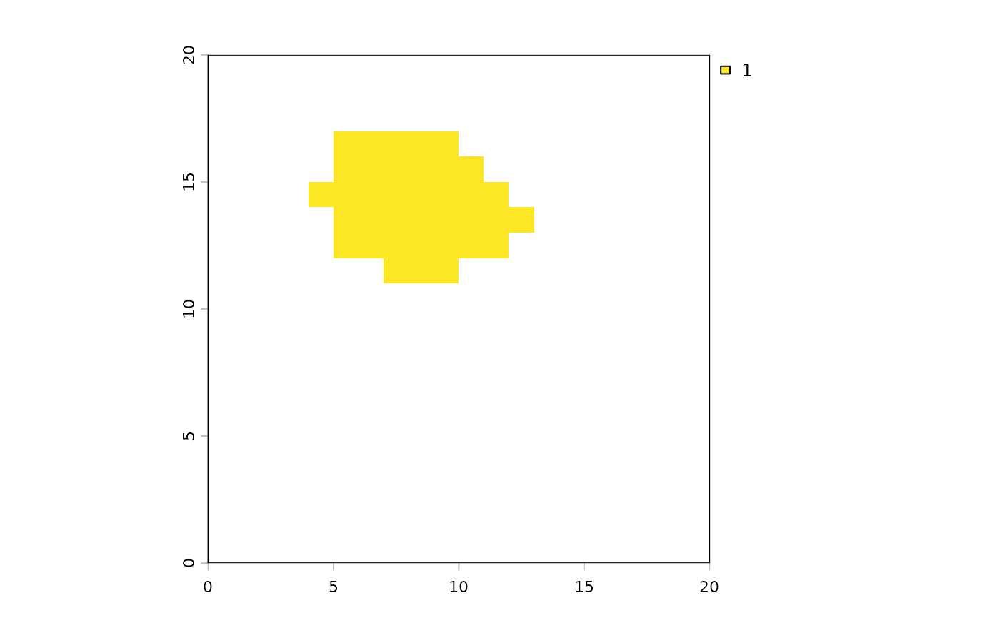

Phylogenetic conservation prioritization
ps_prioritize.RdCreate a ranking of conservation priorities using optimal or probabilistic forward stepwise selection. Prioritization accounts for the occurrence quantities for all lineages present in the site, including terminal taxa and larger clades; the evolutionary branch lengths of these lineages on the phylogeny, which represent their unique evolutionary heritage; the impact that protecting the site would have on these lineages' range-wide protection levels; the compositional complementarity between the site, other high-priority sites, and existing protected areas; the site's initial protection level; the relative cost of protecting the site; and a free parameter "lambda" determining the shape of the conservation benefit function.
Usage
ps_prioritize(
ps,
init = NULL,
cost = NULL,
lambda = 1,
protection = 1,
max_iter = NULL,
method = c("optimal", "probable"),
trans = function(x) replace(x, which(rank(-x) > 25), 0),
n_reps = 100,
n_cores = 1,
summarize = TRUE,
spatial = TRUE,
progress = interactive()
)Arguments
- ps
phylospatial object.
- init
Optional numeric vector or spatial object giving the starting protection status of each site across the study area. Values should be between 0 and 1 and represent the existing level of conservation effectiveness in each site. If this argument is not specified, it is assumed that no existing reserves are present.
- cost
Optional numeric vector or spatial object giving the relative cost of protecting each site. Values should be positive, with greater values indicating higher cost of conserving a site. If this argument is not specified, cost is assumed to be uniform across sites.
- lambda
Shape parameter for taxon conservation benefit function. This can be any real number. Positive values, such as the default value
1, place higher priority on conserving the first part of the range of a given species or clade, while negative values (which are not typically used) place higher priority on fully protecting the most important taxa (those with small ranges and long branches) rather than partially protecting all taxa. See the function plot_lambda for an illustration of alternativelambdavalues.- protection
Degree of protection of proposed new reserves (number between 0 and 1, with same meaning as
init).- max_iter
Integer giving max number of iterations to perform before stopping, i.e. max number of sites to rank.
- method
Procedure for selecting which site to add to the reserve network at each iteration:
"optimal": The default, this selects the site with the highest marginal value at each iteration. This is a optimal approach that gives the same result each time.
"probable": This option selects a site randomly, with selection probabilities calculated as a function of sites' marginal values. This approach gives a different prioritization ranking each time an optimization is performed, so
n_repsoptimizations are performed, and ranks for each site are summarized across repetitions.
- trans
A function that transforms marginal values into relative selection probabilities; only used if
method = "probable". The function should take a vector of positive numbers representing marginal values and return an equal-length vector of positive numbers representing a site's relative likelihood of being selected. The default function returns the marginal value if a site is in the top 25 highest-value sites, and zero otherwise.- n_reps
Number of random repetitions to do; only used if
method = "probable". Depending on the data set, a large number of reps (more than the default of 100) may be needed in order to achieve a stable result. This may be a computational barrier for large data sets; multicore processing vian_corescan help.- n_cores
Number of compute cores to use for parallel processing; only used if
method = "probable".- summarize
Logical: should summary statistics across reps (TRUE, default) or the reps themselves (FALSE) be returned? Only relevant if
method = "probable".- spatial
Logical: should the function return a spatial object (TRUE, default) or a matrix (FALSE)?
- progress
Logical: should a progress bar be displayed?
Value
Matrix or spatial object containing a ranking of conservation priorities. Lower rank values represent higher
conservation priorities. All sites with a lower priority than max_iter have a rank value equal to the number
of sites in the input data set (i.e. the lowest possible priority).
- If
method = "optimal". the result contains a single variable "priority" containing the ranking.
- If
method = "probable"andsummarize = TRUE, the "priority" variable gives the average rank across reps, variables labeled "pctX" give the Xth percentile of the rank distribution for each site, variables labeled "topX" give the proportion of reps in which a site was in the top X highest-priority sites, and variables labeled "treX" give a ratio representing "topX" relative to the null expectation of how often "topX" should occur by chance alone.
- If
method = "probable"andsummarize = FALSE, the result contains the full set of
n_repsolutions, each representing the the ranking, with low values representing higher priorities..
Details
This function uses the forward stepwise selection algorithm of Kling et al. (2019) to generate a ranked conservation prioritization.
Prioritization begins with the starting protected lands network identified in init, if provided. At each iteration, the marginal
conservation value of fully protecting each site is calculated, and a site is selected to be added to the reserve network. Selection can
happen either in an "optimal" or "probable" fashion as described under the method argument. This process is repeated until all sites
are fully protected or until max_iter has been reached, with sites selected early in the process considered higher conservation
priorities.
The benefit of the probabilistic approach is that it relaxes the potentially unrealistic assumption that protected land will actually be added in the optimal order. Since the algorithm avoids compositional redundancy between high-priority sites, the optimal approach will never place high priority on a site that has high marginal value but is redundant with a slightly higher-value site, whereas the probabilistic approach will select them at similar frequencies (though never in the same randomized run).
Every time a new site is protected as the algorithm progresses, it changes the marginal conservation value of the other sites. Marginal
value is the increase in conservation benefit that would arise from fully protecting a given site, divided by the cost of protecting the
site. This is calculated as a function of the site's current protection level, the quantitative presence probability or abundance of all
terminal taxa and larger clades present in the site, their evolutionary branch lengths on the phylogeny, the impact that protecting the
site would have on their range-wide protection levels, and the free parameter lambda. lambda determines the relative importance of
protecting a small portion of every taxon's range, versus fully protecting the ranges of more valuable taxa (those with longer
evolutionary branches and smaller geographic ranges).
References
Kling, M. M., Mishler, B. D., Thornhill, A. H., Baldwin, B. G., & Ackerly, D. D. (2019). Facets of phylodiversity: evolutionary diversification, divergence and survival as conservation targets. Philosophical Transactions of the Royal Society B, 374(1763), 20170397.
Examples
# \donttest{
# simulate a toy `phylospatial` data set
set.seed(123)
ps <- ps_simulate()
# basic prioritization
p <- ps_prioritize(ps)
# specifying locations of initial protected areas
# (can be binary, or can be continuous values between 0 and 1)
# here we'll create an `init` raster with arbitrary values ranging from 0-1,
# using the reference raster layer that's part of our `phylospatial` object
protected <- terra::setValues(ps$spatial, seq(0, 1, length.out = 400))
cost <- terra::setValues(ps$spatial, rep(seq(100, 20, length.out = 20), 20))
p <- ps_prioritize(ps, init = protected, cost = cost)
# using probabilistic prioritization
p <- ps_prioritize(ps, init = protected, cost = cost,
method = "prob", n_reps = 1000, max_iter = 10)
terra::plot(p$top10)

# }